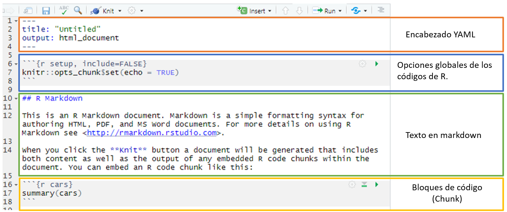

Taller de RMarkdown
Evelyn Gutierrez
Objetivos
Familiarizarse con el entorno de RStudio para crear reportes.
Comprender la estructura de un documento R Markdown.
Comprender los diferentes formatos y los ajustes básicos.
Aprender los fundamentos de la sintaxis de Markdown.
Aprender a estructurar un documento .rmd para compilarlo en diferentes formatos.
Aprender a compartir su documento online en RPubs.
Lo que necesitamos (como mínimo)
- R
- RStudio
- Paquetes y utilidades de RStudio:
RStudio
- La interfaz básica de R no es muy intuitiva. Por esta razón no se usa mucho y se prefiere un IDE.

- Un IDE, Integrated Development Environment: un editor de scripts - es un entorno mucho más amigable que facilita el trabajo (gestión de archivos, objetos y comandos, historial de funciones, autocompletado,…)
- El IDE más utilizado es RStudio (pero hay otros como Tinn-R o jamovi).
- Los comandos y funciones son los mismos para R y RStudio.
Instalación
Descargar e instalar R básico - Elija su sistema operativo y siga los pasos.
Descargar e instalar RStudio (u otra interfaz) - Elija la versión gratuita y su sistema operativo.
Verificar si tienes los paquetes (package): rmarkdown y knitr en RStudio:
En la consola de R, utilizar lo siguiente:
find.package(c("rmarkdown","knitr"))
## [1] "C:/Users/EvelynG/Documents/R/win-library/4.0/rmarkdown"
## [2] "C:/Users/EvelynG/Documents/R/win-library/4.0/knitr"
Si no lo tiene, puedes instalarlos con los siguiente comandos.
En la consola de R, utilizar lo siguiente:
install.packages("rmarkdown")
install.packages("knitr")
¿Qué es un paquete o package?
Un paquete es un módulo (o extensión, biblioteca) que contiene un conjunto de funciones (a menudo relacionadas con un método o dominio particular)
En la instalación, R viene con un conjunto de funciones básicas {base} y módulos por defecto (built-in packages).
La comunidad desarrolla constantemente paquetes de funciones especializadas.
Hay más de 15.000 en el sitio web oficial de R CRAN. También se pueden encontrar otros en otros lugares (Github, por ejemplo).
Los paquetes deben ser descargados (install.packages() o pueden ser instalados a través del menú superior de RStudio Tools>Install packages…). Solo es necesario instalarlos una vez; sin embargo, se deberán cargar (library() o require()) cada sesión que se quieran utilizar.
Una función (por ejemplo, correlación, tablas de contingencia…) puede encontrarse en varios paquetes con variantes más o menos importantes (procedimientos, opciones, argumentos, resultados).
Los paquetes también deben actualizarse periódicamente. Esto se puede realizar a través de: Tools>Check for package updates….
¿Qué es R Markdown y por qué utilizarlo?
R + Markdown = RMarkdown
R Markdown es un paquete instalado por defecto en RStudio.
Es una herramienta creada para asegurar la reproducibilidad de un análisis o una investigación integrando en un único documento el texto en Markdown, el código (R u otro) y los resultados de su análisis.
Evita todos los pasos de copiar y pegar tablas, gráficos, imágees, y crea documentos o presentaciones fáciles de actualizar en diferentes formatos: word, pdf, ppt, html, etc.
Está optimizado para la creación de documentos html (formato que se beneficia de las opciones más interesantes).
¿Qué es R Markdown y por qué utilizarlo?

¿Cómo funciona?
R Markdown combina diferentes procesos para crear documentos en diferentes formatos a partir de un único archivo:
¿Cómo funciona?
Todo comienza con la creación de un documento .Rmd en RStudio. Un archivo R Markdown es un simple archivo de texto con una extensión .Rmd. (puede crearlo en el Bloc de notas).
Para generar un reporte, en RStudio utilice el botón knit que activa la función rmarkdown::render() y ejecuta los bloques de código en el archivo .Rmd para incluirlos en el documento final. Estos resultados se convierten en un archivo temporal .md (que contiene el código y los resultados).
Este es un bloque de código para compilar un documento y establecer el formato de salida con el argumento output_format de la función render:
library(rmarkdown)
render("1-example.Rmd", output_format = "word_document")
A continuación, este archivo .md es procesado por la herramienta Pandoc, que permite convertir el contenido de un lenguaje de marcas (markup) en diferentes formatos (“navaja suiza” de la conversión de formatos de documentos). Los parámetros de conversión se especifican en la cabecera YAML del documento .Rmd, donde entre otras cosas se especifica el formato final.
Si el formato final deseado es pdf, se añade un paso de procesamiento adicional: Pandoc transformará el archivo .md en otro archivo intermedio .tex. Este archivo .tex será luego procesado por LaTeX en su forma final de pdf.
Estructura de un documento RMarkdown
Contiene 3 partes:
- Un encabezado de metadatos (encabezado YAML): encabezado escrito en YAML rodeado por 3 guiones
- Texto: formateado en markdown
- Bloques de código: códigos encerrados entre triple tilde invertida (acentos agudos) ```` (Para crearlos rapidamente se puede usar ctrl +alt + i)

Estructura de un documento RMarkdown

Texto con formato Markdown
Sobre Markdown
Markdown es un lenguaje de marcado, una versión simplificada de html, creado por John Gruber en 2004.
Se utiliza para estructurar contenidos textuales y producir documentos a partir de texto plano etiquetado.
Markdown refleja la filosofía del estoicismo: el “mundo natural” consiste en texto plano, y no hay que dejarse controlar por el deseo de placer (visual). — Yihui
A menudo se compara con LaTeX; otro lenguaje de marcado más potente pero mucho más complejo para producir documentos pdf.
Existen varias versiones de Markdown desarrolladas por diferentes programadores. La que utiliza R Markdown es la versión de Pandoc que también permite convertir los documentos en diferentes formatos.
Su gran sencillez lo convierte en una herramienta más limitada en cuanto a la estructuración de documentos que el html, LaTeX y los programas de tratamiento de textos. (véase Gruber)
Por lo tanto, es útil conocer estos lenguajes (html, css, javascript, LaTeX) si quiere personalizar el formato de sus documentos (pero tenga cuidado porque el uso de html y LaTeX puede causar problemas al exportar a ciertos formatos).
Ejercicio 2
Comenzar a hacer un CV en Rmd con la librería pagedown.
Instalar la librería pagedown.
remotes::install_github('rstudio/pagedown')
Crear desde modelo: File>New File>RMarkdown>From Template
Editar títulos y las siguientes secciones:
- Short bio.
- Experiencia Profesional.
- Eduación.
Otra forma de hacer un CV en Rmd es con la librería vitae.. Para esto necesitarás tener instalado \(LaTex\) o instalar Tinytex
Códigos de R (Chunks)
El código R puede incluirse de dos maneras:
- En bloques de código (chunks): inician con ```{r} (donde r indique el lenguaje a utilizar, y se puede poner otros como: python, sql, …)
```{r}
mean(23, 65, 43, 34, 56) # El estilo de los bloques se define mediante la opción "highlight" en el YAML
```
- Las etiquetas de bloque se pueden insertar con el botón
insert o con el atajo de teclado ctrl + alt + i.
- Lo mejor es dividir el código que genera diferentes salidas en diferentes bloques
- En el texto (Inline R code) que comienza con
r y termina con un acento ``.
Código:
Resultados:
La edad media de nuestros participantes es 23.
Código R
Configuración de chunks.
El “comportamiento” de los bloques de código y la presentación de los resultados pueden configurarse de varias maneras.
Knitr ofrece muchasopciones (chunck options) que pueden añadirse como argumentos entre las llaves de cada bloque (cada opción debe estar separada por una coma).
```{r, chunk-label, results='hide', fig.height=4}
```
Cada bloque puede tener opcionalmente un nombre (etiqueta), debe ser la primera opción.
Estas opciones controlan esencialmente cómo se compila (o no) el código de cada bloque y cómo se presentan (o no) los resultados de cada bloque de código.
Muchos de los argumentos tienen valores lógicos: TRUE O FALSE (con un valor por defecto que debe ser cambiado si no es apropiado)
Opciones globales**: Es posible establecer los valores de los argumentos para todos los bloques desde el principio incluyendo el siguiente bloque al principio del documento (por defecto cuando se crea un nuevo archivo .Rmd):

Código R
Configuración del funcionamiento de los bloques de código

Código R
- Para presentar y subrayar fragmentos de código sin ejecutarlos, como si fueran texto, insértelos entre 2 tildes (acento grave):
r mean(23, 65, 43, 34, 56)
Para insertar un texto en un bloque resaltado: añador triple tilde ``` una línea antes y despues del texto.
Texto en un bloque
Texto con sangría
- De lo contrario, los espacios al principio de una línea nunca se tienen en cuenta
Algunos detalles finales:
Es mejor añadir una línea en blanco entre diferentes elementos, como un título y un párrafo.
Para hacer un salto de línea: termine la línea con dos espacios + Enter.
Para añadir espacios adicionales entre líneas/secciones, utilice la etiqueta html: <br>.
Para incluir comentarios que no saldrán en el documento final, utilice comentarios en html: <!-- Esto es un comentario -->.
Más sobre Rmarkdown
Yihui Xie, J. J. Allaire, Garrett Grolemund, 2020-10-14, R Markdown: The Definitive Guide
Yihui Xie, Christophe Dervieux, Emily Riederer, 2020-09-21, R Markdown Cookbook
Yihui Xie, knitr. Elegant, flexible, and fast dynamic report generation with R
Rmarkdown et RStudio Cheatsheets
RStudio, RMarkdown Gallery
Markdown Tutorial
Karl Broman, Writing reproducible reports. knitr with R Markdown
Michael Clark, 2019-11-06, Introduction to R Markdown
Yan Holtz, 10 December 2018, Pimp my RMD: a few tips for R Markdown
Alison Hill · Desirée De Leon, Sharing on Short Notice. HOW TO GET YOUR TEACHING MATERIALS ONLINE WITH R MARKDOWN
Writing publications with R, Wed, Aug 17, 2016
Mike Frank & Chris Hartgerink, 2017-07-31, RMarkdown for writing reproducible scientific papers
Marian L. Schmidt, May 11th, 2016, Creating Dynamic Documents with RMarkdown and Knitr
Thea Knowles, January 14, 2020, RMarkdown and Bookdown for Academic Writing in R
Más sobre Rmarkdown
Siguiente sesión:
Personalizar Rmd
Compartir documentos en línea: